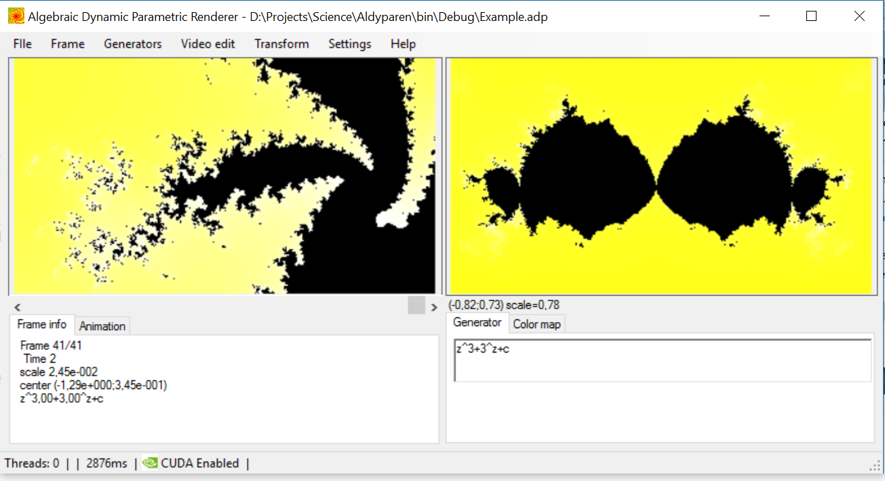

Aldyparen
Algebraic Dynamic Parametric Renderer
The program builds sets calculated from complex-number sequences (such as Mandelbrot set).
Features of verson 1.0:
- 11 templates of sets, with variable parameters.
- Real-time navigation on Complex plane (translation,zoom,rotation).
- Saving images in files at any resolution, with multi-threading.
- Making video of rotations, translation and continuous deformations of sets.
- Adjustable color map
Added in verson 1.1:
- Saving videos in separate thread.
- Graphics optimized.
- Added real-valued parameters of set.
Here you can find some fractals built with this program
New in version 2.0:
- Free specifying of the set by researcher.
- Optimization using CUDA.
New in version 2.3:
- Grid and annotations on frames.
- Now you can see all frames in project.
- Saving projects to files (*.adp).
- Opening *.adp files from Windows (open with).
New in version 2.4:
- User manual.
- Better interface.
- Examples.
Screenshot:

Here is an example of what you can do with this program
Downloads
Download version 2.4 (Latest release)
.NET Framework 4 is required.